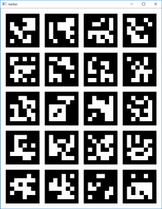
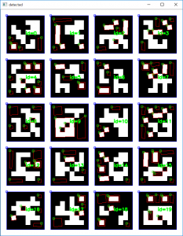

Introduction
OpenCVSharp に新しいPull Requestを投げました。
内容は、OpenCV の拡張モジュールに含まれる、ArUco と呼ばれる拡張現実アプリケーション用軽量ライブラリのOpenCVSharpへの移植です。
移植作業において、P/Invokeを書くことも大変だったのですが、ライブラリそのものの使い方も大変でしたのでメモします。
What is ArUco?
まず、ArUcoの公式ページは下記のようです。
ArUcoという名称は、おそらく、Augmented Reality Universidad de Córdobaの略なのだと思います。
ucoというは、Universidad de Córdoba、つまりスペインのコルドバ大学のドメインです。
特徴
下記は、ArUcoについてのOpenCVの下記のドキュメントページです。
そこで、
ArUco markers are binary square fiducial markers that can be used for camera pose estimation. Their main benefit is that their detection is robust, fast and simple. The aruco module includes the detection of these types of markers and the tools to employ them for pose estimation and camera calibration. Also, the ChArUco functionalities combine ArUco markers with traditional chessboards to allow an easy and versatile corner detection. The module also includes the functions to detect ChArUco corners and use them for pose estimation and camera calibration.
AuUcoマーカーはカメラの姿勢推定に用いことが可能な二値化された位置合わせマーカーです。主な利点はそれらの検出がロバスト、高速かつシンプルであることです。
ArUcoモジュールには、これらの種別の検出、姿勢推定とカメラキャリブレーションのためのツールを含みます。
また、ChArUcoの機能は、ArUcoマーカーに従来のチェスボードを組み合わせることで、簡単で多目的に使えるコーナー検出を可能にします。モジュールは、ChArUcoのコーナー検出、それらを使用した姿勢推定とカメラキャリブレーション機能も含みます。
と記述してあります。
とりあえず、位置合わせマーカーが全ての起点となります。
画像中からマーカーを見つけ出し、マーカーの位置関係から、壁や床の向き、角度を計算できる模様。
How to use
最初に使い方が大変だったと書きましたが、コード自体は大したことがないです。後述のソース見ればわかりますが、マーカーの検出自体は数行です。
何にはまったかというと、
- OpenCVに含まれるサンプル画像は使えない
- 辞書が一致しないと検出できない
とい2点です。
サンプル画像が使えない
例えば、https://github.com/opencv/opencv_contrib/blob/master/modules/aruco/tutorials/aruco_detection/images/singlemarkersoriginal.pngというサンプルがあります。OpenCVの公式リポジトリにあるサンプルです。
普通に、この画像を読み込んで、cv::aruco::detectMarkersに渡しても何も返ってきません。
どうも、サンプル画像のマーカーは、現行の辞書で生成される画像とは異なる模様。
下記のコミュニティのAnswerでの回答です。
なので、自分でマーカーを作って、検出しているのが、後述のソースになります。
辞書が一致しないと検出できない
これは、考えてみれば当たり前なのですが、マーカーを検出する際、どの辞書を使うかを引数に渡しています。
つまり、検出対象の画像に含まれるマーカーの基になった辞書と、検出に利用する辞書が一致しないと何も検出できません。
これに気づかなかったため、OpenCVSharpに移植する際、P/Invokeの記述ミスやメモリ破壊を疑ってしまい、無駄に時間を消費してしまいました。
Source
下記がサンプルです。
1 |
|
これを動かすと、次のようになります。

マーカー画像
{kind=link}

検出後
{kind=link}
検出後の画像には、マーカーを青で囲んでいます。
赤い領域は、候補として検出されたがマーカーとしては識別されなかった棄却された領域です。
Conclusion
今回は歪みもない画像なので検出精度は100%ですが、現実の空間でもきちんとマーカーの位置を検出できます。
マーカーを紙面に印刷し、壁やボードに貼ることで、カメラの位置もわかりますし、付近の物体の位置関係も推定できそうです。